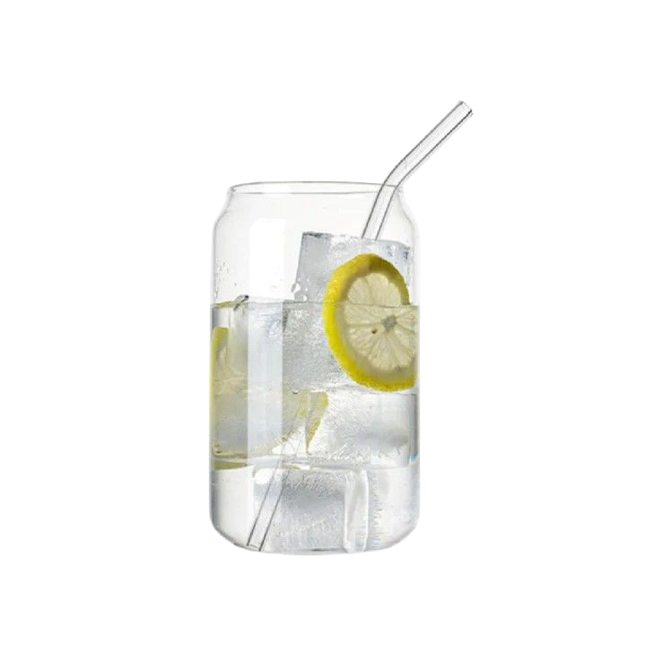
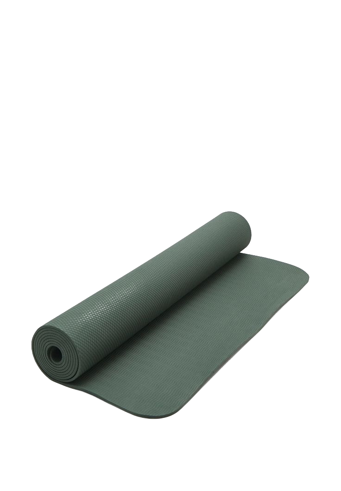
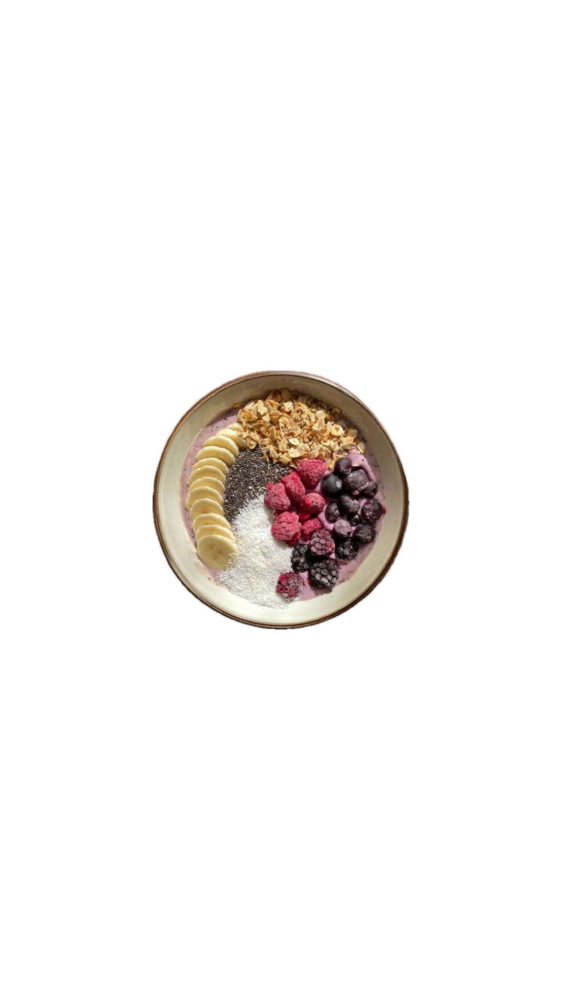
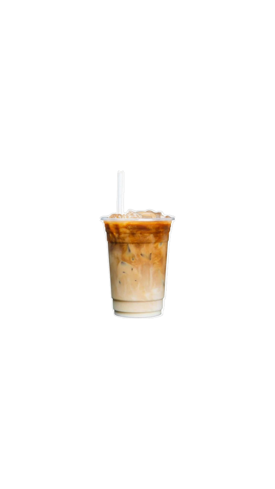

After being a barista for a year, I've come to appreciate my coffee. Now, I think I have definitely abused my caffeine receptors so the caffeine doesn’t really touch me. But there's just something about getting yourself a sweet treat to start your morning that gives me something to look forward to.

Drinking a glass of water first thing in the morning helps kickstart your metabolism, hydrates your body, and flushes out toxins. Many healthy morning routines emphasize hydration before coffee or breakfast.
Even a few minutes of stretching or light exercise can increase energy levels, improve mood, and help wake up your body. Simple morning movement sets a positive tone for the day.


A healthy breakfast with protein, fiber, and a bit of healthy fat fuels your brain and body. Avoid skipping it — breakfast is critical for maintaining energy and focus.
Whether it’s a sweet pastry, a smoothie, or a specialty coffee, having a small treat to look forward to can boost your mood and create a positive morning ritual.
